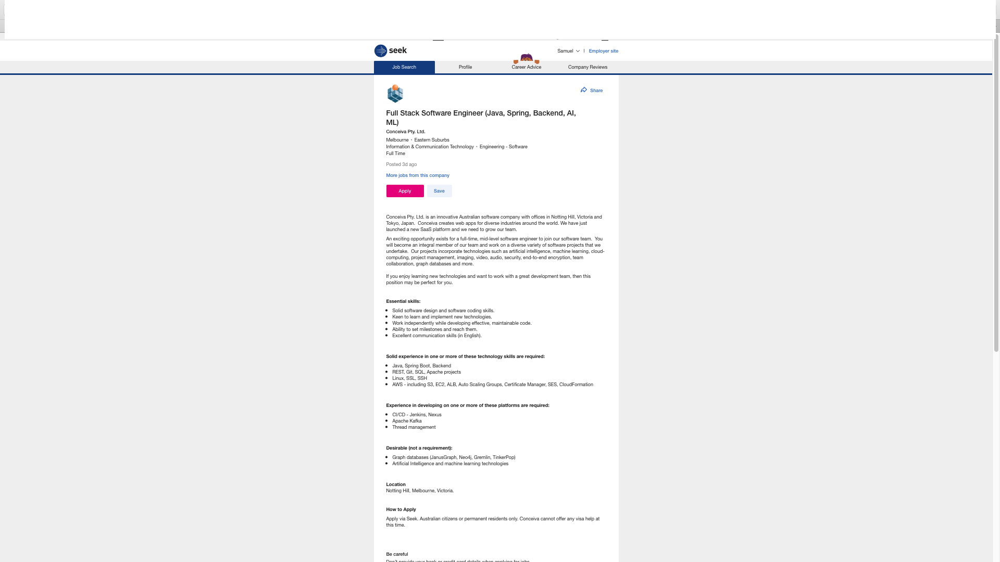

Ideal Job
My Ideal job is developing software for computer system and phone application also I would love to work in game development. My ideal job is advertised in seek.com
Job Description: Full Stack Software Developer (Java, Backend, AI, ML)
The job is for a mid-level software engineer to work with a team in variety of software project in Artificial intelligence, machine learning, cloud computing, security, end-to-end encryption and more. And what makes this job interesting is that they develop different software project for different incorporated technologies. The required skills for this position is solid software design and software coding skills, to be keen to learn and implement new technologies, to work independently while developing effective and maintainable code, the ability to set milestone and reach them, to have excellent communication skills. The experience required for this job in one or more of these technologies: Java, Spring Boot, Backend, REST, Git, SQL, Apache project, Linux, SSL, SSH, AWS including S3, EC2, ALB, Auto scaling group, Certificate Manger, SES, Cloud formation. And this position requires developing in one or more in these platforms: CI/CID –Jenkins, Nexus, Apache Kafka and thread management. And these are the desired skills but not required are: Graph Database (Janus Graph, Neo4j, Gremlin, Tinker Pop), Artificial intelligence and machine learning technologies. My current skills and qualifications are diploma in Networking and currently studying Bachelor of Information technology. During my study in RMIT I will learn and gain qualification in programming, software design and development, mobile software development, Artificial intelligence and machine learning.
Full Stack Software Developer
